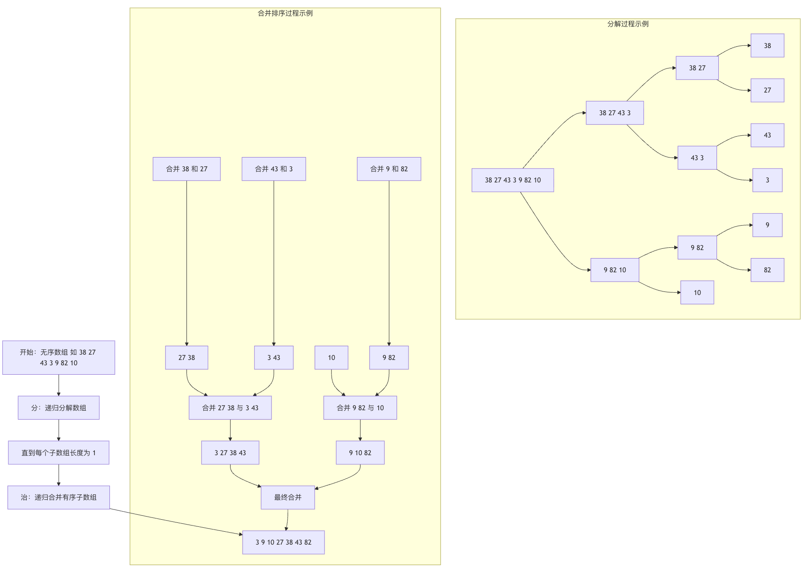
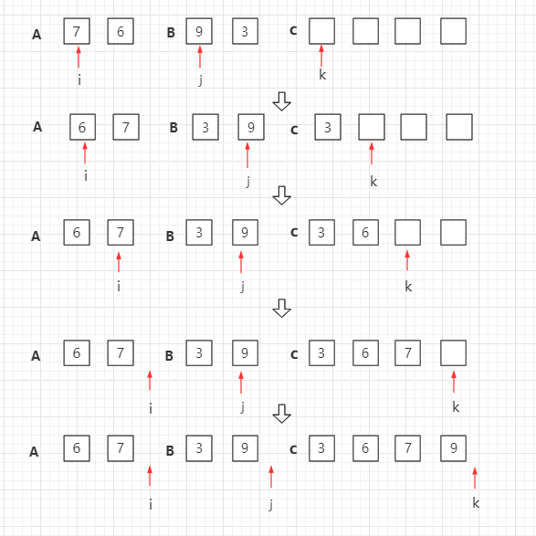
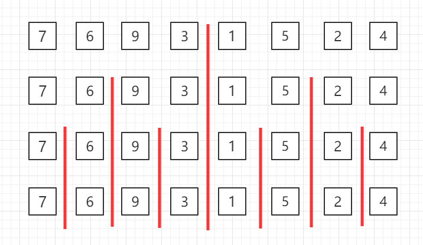
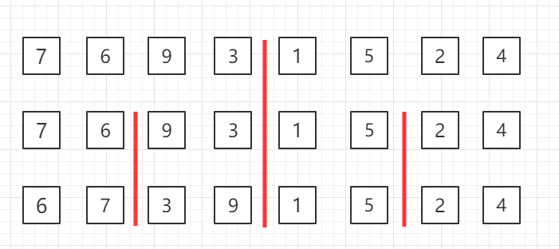
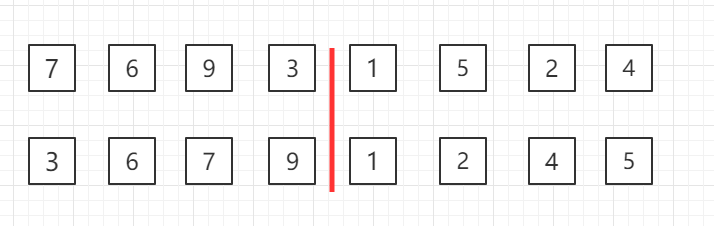
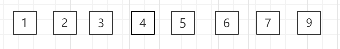

マージソート
マージソート（英語：Merge sort、または mergesort）は、マージ操作に基づく効率的なソートアルゴリズムです。
マージソートは、分割統治法（Divide and Conquer）を採用した非常に典型的な応用例です。既に整列済みの部分列をマージして、完全に整列した列を得ます。つまり、先に各部分列を整列させ、次に部分列同士を整列させます。2つの整列済みのリストを1つの整列済みリストにマージすることを二路マージと呼びます。
想像してみてください。完全にシャッフルされたトランプを整理する場面を。効率的な方法の1つは、まずそのトランプを2つの小さな山に分け、それぞれの山を整頓し、最後にこの2つの整列済みの山を1組の整列済みトランプにマージすることです。マージソートまさにこのような分割して統治するという思想に基づく古典的なソートアルゴリズムです。
その中核となる操作は、次の2つのステップにまとめられます。
- 分：大きな無秩序なリストを再帰的に、中央から絶えず分割し、各サブリストが要素を1つだけ含むまで（要素が1つのリストは自然に整列済みです）、複数の小さなサブリストに分解します。
- 治：これらの整列済みサブリストを再帰的に2つずつマージし、マージの過程でソートしながら、最終的に1つの完全な整列済みリストにまとめます。
適用について
マージソートは、データ量が大きく、安定性が求められる場面に適しています。
マージソートは「安定」なソートアルゴリズムです（つまり、等しい要素の相対的な順序はソート後も保たれます）。その時間計算量はどのような場合でも O(n log n) であり、大規模データを扱う際に非常に効率的です。ただし、マージ処理ではデータを一時的に格納するための追加配列が必要なため、空間計算量は O(n) です。
以下のフローチャートは、マージソートの分割と統治の全プロセスを明確に示しています。

プロセス図
マージソートは再帰アルゴリズムの一例です。このアルゴリズムの基本操作は、2つの整列済み配列をマージすることです。2つの入力配列 A と B、1つの出力配列 C、および3つのカウンタ i、j、k を取り、それらの初期位置は対応する配列の先頭に設定されます。
A[i] と B[j] のうち小さい方を C の次の位置にコピーし、関連するカウンタを1つ前に進めます。
2つの入力配列の一方が使い切られた場合、もう一方の配列の残りの部分を C にコピーします。

トップダウンのマージソートの再帰的なグループ分けの図：

3行目の2つ1組のデータに対してマージソートを実行します

2行目の4つ1組のデータに対してマージソートを実行します

全体に対してマージソートを実行します

Java サンプルコード
ソースコードパッケージのダウンロード：Download
MergeSort.java ファイルコード：
// arr[l...mid] と arr[mid+1...r] の2つの部分をマージします
private static void merge(Comparable[] arr, int l, int mid, int r) {
Comparable[] aux = Arrays.copyOfRange(arr, l, r + 1);
// 初期化：i は左半分の開始インデックス位置 l を指し、j は右半分の開始インデックス位置 mid+1 を指します
int i = l, j = mid + 1;
for (int k = l; k <= r; k++) {
if (i > mid) { // 左半分の要素がすべて処理済みの場合
arr[k] = aux[j - l];
j++;
} else if (j > r) { // 右半分の要素がすべて処理済みの場合
arr[k] = aux[i - l];
i++;
} else if (aux[i - l].compareTo(aux[j - l]) < 0) { // 左半分が指す要素 < 右半分が指す要素
arr[k] = aux[i - l];
i++;
} else { // 左半分が指す要素 >= 右半分が指す要素
arr[k] = aux[j - l];
j++;
}
}
}
// 再帰的にマージソートを使用して、arr[l...r] の範囲をソートします
private static void sort(Comparable[] arr, int l, int r) {
if (l >= r) {
return;
}
int mid = (l + r) / 2;
sort(arr, l, mid);
sort(arr, mid + 1, r);
// arr[mid] <= arr[mid+1] の場合は merge を実行しません
// ほぼ整列済みの配列には非常に効果的ですが、一般的な場合にはある程度のパフォーマンス損失があります
if (arr[mid].compareTo(arr[mid + 1]) > 0)
merge(arr, l, mid, r);
}
public static void sort(Comparable[] arr) {
int n = arr.length;
sort(arr, 0, n - 1);
}
// MergeSort をテストします
public static void main(String[] args) {
int N = 1000;
Integer[] arr = SortTestHelper.generateRandomArray(N, 0, 100000);
sort(arr);
// 配列を出力します
SortTestHelper.printArray(arr);
}
}
アルゴリズムの原理と手順の詳細
マージソートの実装は、主に2つの中核関数に依存します：merge_sort（「分割」を担当）とmerge（「統治」を担当）。
1. 分配関数merge_sort
この関数は再帰的な方法で動作します：
基本ケース：現在の配列の長さが1以下の場合、それは既に整列済みなので、そのまま返します。
再帰ケース：
- 配列の中央位置を見つけます
mid。 - 左半分に対して
arr[:mid]再帰呼び出しを行いますmerge_sort。 - 右半分に対して
arr[mid:]再帰呼び出しを行いますmerge_sort。 - 最後に、
merge関数を呼び出して、整列済みの左右2つの部分をマージします。
2. マージ関数merge
これはアルゴリズムの核心であり、2つの既に整列済みの小さな配列を1つの大きな整列済み配列にマージします。その過程は、アルファベット順に整列された2冊のアドレス帳を同時にめくりながら、1冊にまとめるのに似ています。
- 一時配列を作成します
temp、および3つのポインタ：i（左の配列の現在の要素を指す）、j（右の配列の現在の要素を指す）、k（一時配列の書き込み位置を指す）。 - 比較し
left[i]和right[j]、小さい方の要素を入れますtemp[k]、次に対応するポインタとkを1つ前に進めます。 - 手順2を、どちらか一方の配列のすべての要素が一時配列に入れられるまで繰り返します。
- もう一方の配列に残っているすべての要素（それらはもともと入れられた要素より大きく、整列済みです）を、そのまま順番に一時配列の末尾に追加します。
- 一時配列
tempの中の整列済みの列を元の配列の対応する位置にコピーして戻します。
コード実装と行ごとの解説
Python でマージソートを実装しましょう。完全で、コメントが詳しいバージョンを提供します。
テストデータ
まず、テストデータとして順序がバラバラのリストを用意します。
サンプル
test_array = [38, 27, 43, 3, 9, 82, 10]
print("元の配列:", test_array)
完全な実装
サンプル
"""
マージソートの主関数。
引数：
arr (list)：ソート対象のリスト。
戻り値：
list：ソート後の新しいリスト（わかりやすさのため、この実装では新しいリストを返します）。
"""
# 基本ケース：配列の長さが0または1なら、既に整列済み
if len(arr) <= 1:
return arr
# 1. 分割：中央点を見つけ、配列を半分に分ける
mid = len(arr) // 2
left_half = arr[:mid] # 左半分
right_half = arr[mid:] # 右半分
# 左右の半分を再帰的にソートする
left_sorted = merge_sort(left_half)
right_sorted = merge_sort(right_half)
# 2. 統治：2つの整列済みサブ配列をマージする
return merge(left_sorted, right_sorted)
def merge(left, right):
"""
2つの整列済みリストをマージします。
引数：
left (list)：1つ目の整列済みリスト。
right (list)：2つ目の整列済みリスト。
戻り値：
list：マージ後の整列済みリスト。
"""
sorted_list = [] # マージ結果を格納するための一時リスト
i = j = 0 # i と j はそれぞれ left と right を走査するポインタ
# 3. 比較してマージ：両方のリストにまだ要素がある間
while i < len(left) and j < len(right):
if left[i] <= right[j]: # ソートの安定性を保つために <= を使用することに注意
sorted_list.append(left[i])
i += 1
else:
sorted_list.append(right[j])
j += 1
# 4. 残りの要素を処理：左リストまたは右リストに残っている要素をすべて結果に追加する
# left と right 自体が整列済みなので、残りの要素は必ずマージ済みの要素より大きい
sorted_list.extend(left[i:])
sorted_list.extend(right[j:])
return sorted_list
# テストデータを使ってアルゴリズムを実行
sorted_array = merge_sort(test_array.copy()) # copy を使用して元の配列を変更しないようにする
print("マージソート後:", sorted_array)
コードの実行と出力
上記のコードを実行すると、次のような出力が表示されます。
原始数组: [38, 27, 43, 3, 9, 82, 10] 归并排序后: [3, 9, 10, 27, 38, 43, 82]
アルゴリズムの計算量分析
アルゴリズムの効率を理解することは非常に重要です。以下の表でマージソートの性能をまとめます。
| 指標 | 計算量 | 説明 |
|---|---|---|
| 時間計算量 | O(n log n) | これはマージソートの最も顕著な利点です。log nは再帰の階層数（配列を半分に分割）に由来し、nは各階層のマージ操作ですべての要素を走査する必要があることに由来します。データの初期状態（最良、最悪、平均）に関係なく、時間計算量は O(n log n) です。 |
| 空間計算量 | O(n) | マージ処理では、一時配列を格納するために元の配列と同じ大きさの追加スペースが必要です。これがマージソートの主な欠点です。 |
| 安定性 | 安定 | 在 merge関数内で、left[i] == right[j]の場合、優先的に取得しますleft[i]（使用しています<=比較）、これにより等しい要素の元の相対的な順序が変わらないことが保証されます。 |
| インプレースソートかどうか | 否 | 追加のメモリ空間が必要です。 |
クリックしてノートを共有
ノートは本記事の内容の拡張である必要があります！
記事の投稿は、こちらをクリック
登録招待コードの取得方法
ノートを共有する前にログインが必要です！
登録招待コードの取得方法